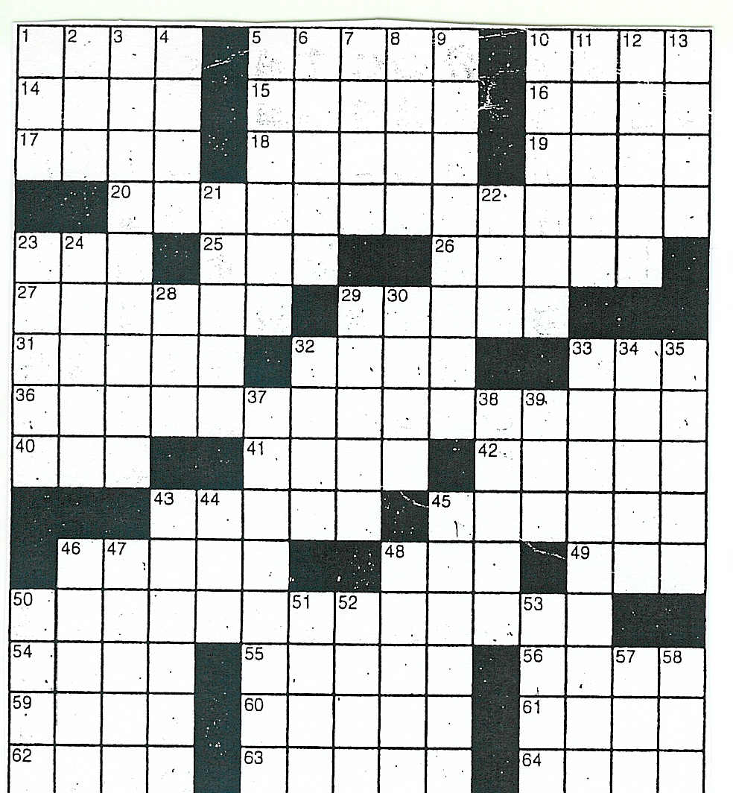

|

SOUPSONG HAS GONE HARDCOPY!
Buy one (or more) at amazon.com or barnesandnoble.com or at your local bookstore.
|
Test Your Skill--
Soupsong Crossword Puzzle on the Boil(e-SoupSong 59: April 1, 2004)
What's a 3-letter ingredient for Erwtensoep? A 9-letter traditional Greek Easter soup? What 4-letter person sold his birthright for lentil soup? And can you figure out the Good Advice this puzzle has to offer? Print it out and test your puzzling skills below. Give up? Click here for answers.

|
Across
1 Meat in harira or Irish stew
5 Strong
10 Role in a play
14 He sold his birthright for lentil soup
15 Law breakage
16 European river
17 24-hour periods
18 Drunk
19 Moon pull on water
20 Beginning of Good Advice
23 Sunday talk (abbr.)
25 Creator of J. Alfred Prufrock (abbr.)
26 Innard
27 Elegantly sad
29 Flare
31 Unfasten
32 European river
33 Erwtensoep staple
36 Monthly sign off?
40 Keeper of U.S. IDs (abbr.)
41 Seducer
42 Down
43 Examine carefully
45 Iraqi city in the news
46 Garret
|
48 Lout
49 Nor (Latin)
50 2nd round of Good Advice
54 Obligatory daily prayer in Islam
55 Greek fabulist
56 Last piece of Good Advice
59 Place
60 Tithe
61 Fluids
62 Russian region
63 Fencing swords
64 Streetcar
Down
1 Guided
2 Simile words
3 Traditional Greek Easter soup (var.)
4 Kiss
5 Sailor stew
6 Meat in pepper pot soup
7 Prepares a pastry pan
8 Site of Australian gold rush
9 Rudolph's condition
10 French soup
11 Biblical city east of Joppa
|
12 Fortification
13 Three spot in cards
21 Small water mammal
22 U.S. exam for graduate school (abbr.)
23 Ticket remnants
24 Sea eagles
28 Make a lap
29 Ditzy
30 Udder (Spanish)
32 Exclamation
33 Facile response
34 Chopin piece
35 Savory jelly
37 Burp
38 Obscene acronym for "messed up"
39 Derisive Australian term for "Brit"
43 New Testament writer
44 Poetic "it's"
45 Vomits (colloq.)
46 Norse pantheon
47 Giggle
48 Former Ugandan dictator
50 Metric weight (abbr.)
51 Dickens's hypocritical schemer
52 Anglo-Saxon serf
53 Direction
57 Constellation
58 Tropical root found in sancocho
|
Best Regards,
Pat S.
_________________
NEXT MONTH: SOUP IN DREAMS
|